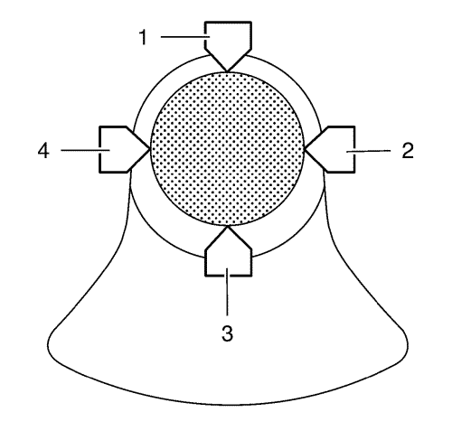

Limpieza e inspección de pistones, bielas y cojinetes — 1.4L LUH y LUJ
Herramientas especiales
EN-470-B Llave de apriete angular
Si desea informarse sobre herramientas regionales equivalentes, consultar Herramientas especiales .
Inspección visual y procedimiento de limpieza
Biela
Advertencia: Utilice gafas de seguridad cuando emplee aire comprimido para evitar lesiones en los ojos.
- Limpie las bielas con disolvente y séquelas con aire a presión
- Examine la biela en busca de lo siguiente:
| • | Indicios de deformación, dobleces, pérdida de metal o grietas |
| • | Arañazos o abrasión en las superficies de asiento del cojinete de biela |
Pistón

- Limpie el pistón con disolvente. NO utilice un cepillo de alambre en ninguna parte del pistón.
- Limpie las ranuras de los segmentos de pistón.
- Compruebe el pistón en busca de lo siguiente:
| • | Roturas en las pistas de los segmentos, grietas en las faldas o alojamientos de los bulones. |
| • | Muescas en ranuras de segmento |
| • | Zonas erosionadas en la cabeza del pistón (1) |
| • | Arañazos o daños en las faldas de los pistones (2) |
| • | Desgaste en el alojamiento del bulón del pistón (3) |
- Si hay un desgaste excesivo, sustituya el pistón
- Mida la holgura entre el bulón del pistón y el orificio del pistón.
Procedimiento de medición del pistón y la biela
Holgura del segmento de pistón
- Monte los segmentos de pistón en el cilindro como se muestra (1) y mida la separación entre las puntas del segmento del pistón. Comparar los valores medidos con las tolerancias especificadas a continuación:
| • | La separación entre las puntas del segmento de compresión superior deberá estar entre 0,4 mm y 0,6 mm (0,0157 pulg.-0,0236 pulg.). |
| • | La separación entre las puntas del segmento de compresión inferior deberá estar entre 0,4 mm y - 0,6 mm (0,0157 pulg.- 0,0236 pulg.). |
| • | La separación entre las puntas del segmento de aceite deberá estar entre 0,2 mm - 0,9 mm (0,0079 pulg. - 0,0354 pulg.). |
- Si las separaciones son mayores que los valores especificados, deberán sustituirse los segmentos.
- Mida la holgura lateral del segmento del pistón tal y como se indica (1). Comparar los valores medidos con las tolerancias especificadas a continuación:
| • | La holgura lateral del segmento de compresión superior debe estar entre 0,025 mm y 0,07 mm (0,001 pulg.-0,0028 pulg.) |
| • | La holgura lateral del segmento de compresión inferior debe estar entre 0,025 mm y 0,07 mm (0,001 pulg.-0,0028 pulg.). |
| • | La holgura lateral del segmento de aceite deberá estar entre 0,04 mm - 0,12 mm (0,0016 pulg.- 0,0047 pulg.). |
- Si la holgura es superior a los valores especificados, sustituya los segmentos.
- Si la holgura sigue siendo excesiva, sustituya los pistones.
Juego del cojinete de biela (con micrómetro de interiores)
- Monte los cojinetes de biela y los sombreretes de biela.
- Apriete los tornillos de sombrerete de cojinete de biela en la siguiente secuencia:
Precaución:Consulte Precaución con las fijaciones en la sección Prólogo.
| | Nota: Se pueden usar tornillos viejos en el procedimiento de medición. |
| 2.1. | Apriete los tornillos de los sombreretes de cojinete de biela a 10 N·m (89 lib. pulg.). |
| 2.2. | Apriete los tornillos a 60° más, con una llave EN-470-B. |
| 2.3. | Apriete los tornillos a 15° más, con una llave EN-470-B. |
- Mida los diámetros del cojinete de biela en 3 puntos tal y como se indica (1). Utilice un micrómetro de interiores.
- Calcule el diámetro interior medio de la biela.
Fórmula: 1er. resultado + 2º. resultado + 3er. resultado / 3

- Mida el diámetro del muñón de la biela en 2 puntos entre 1 y 3 y entre 2 y 4 con un micrómetro.
- Calcule el diámetro medio del muñón de la biela.
Fórmula: 1er. resultado + 2º. resultado / 2.
- Reste el diámetro medio del muñón de la biela del diámetro medio del cojinete de biela para determinar la holgura del cojinete de la biela.
La holgura deberá estar entre 0,013 mm- 0,061 mm (0,0005 pulg. - 0,0024 pulg.).
| © Copyright Chevrolet. All rights reserved |